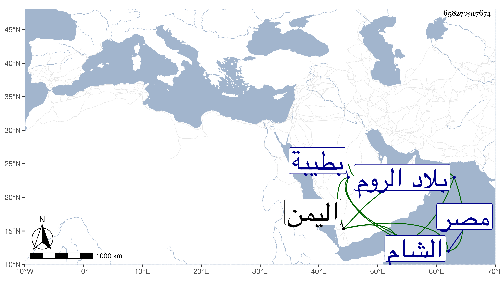

0902Sakhawi.DawLamic.ITO20230111-ara1.EIS1600.658270917674
Biography ID: 658270917674
268
محمد شمس الدين بن صلح أخو الثلاثة قبله . شارك إخوته وولد أخيه أيضا بعد إغتيال أخيه ولم يباشر ذلك . مات في صفر سنة إحدى وتسعين بطيبة عن بضع وأربعين سنة . ودخل الشام ومصر والروم واليمن وغيرها وكان ذكيا شهما كريما ساكنا صاهره مسعود المغربي على ابنته وأنجب أبا القسم رجلا له أولاد .
